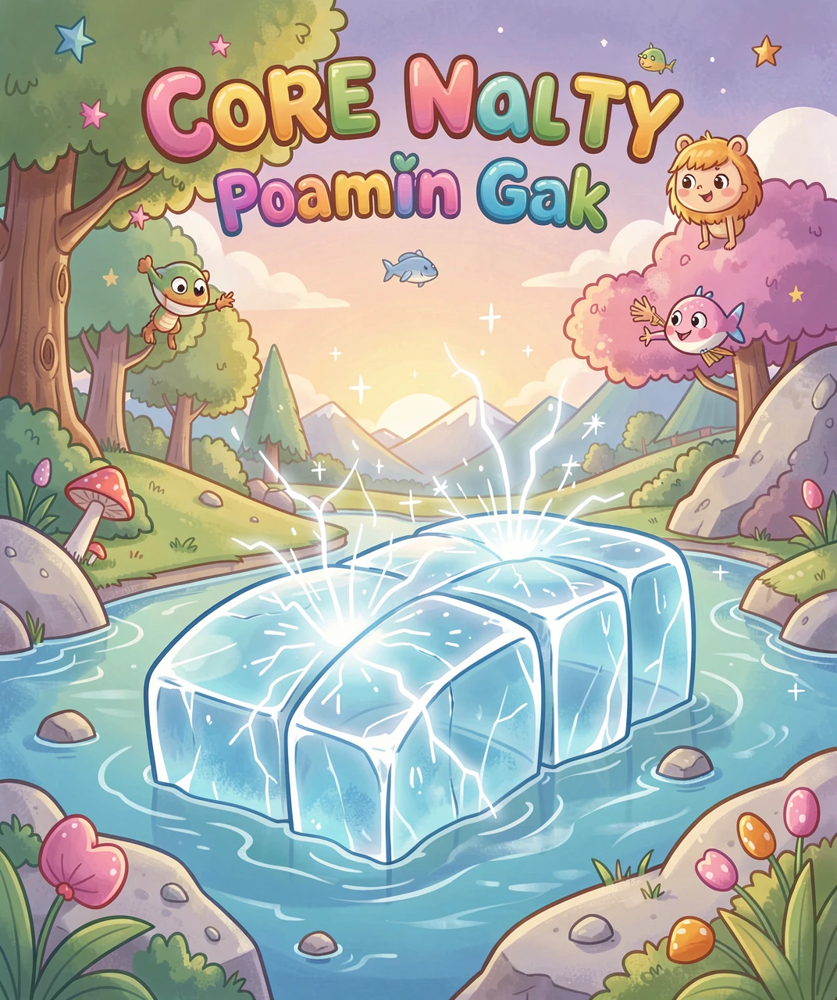
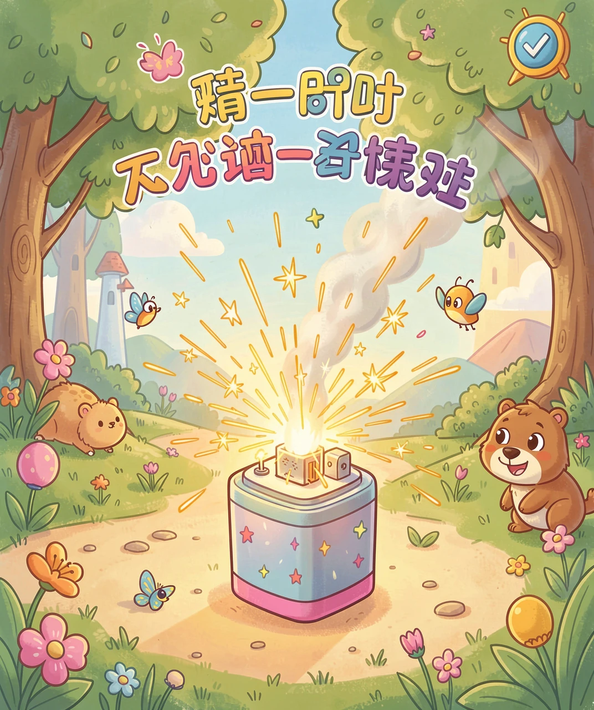
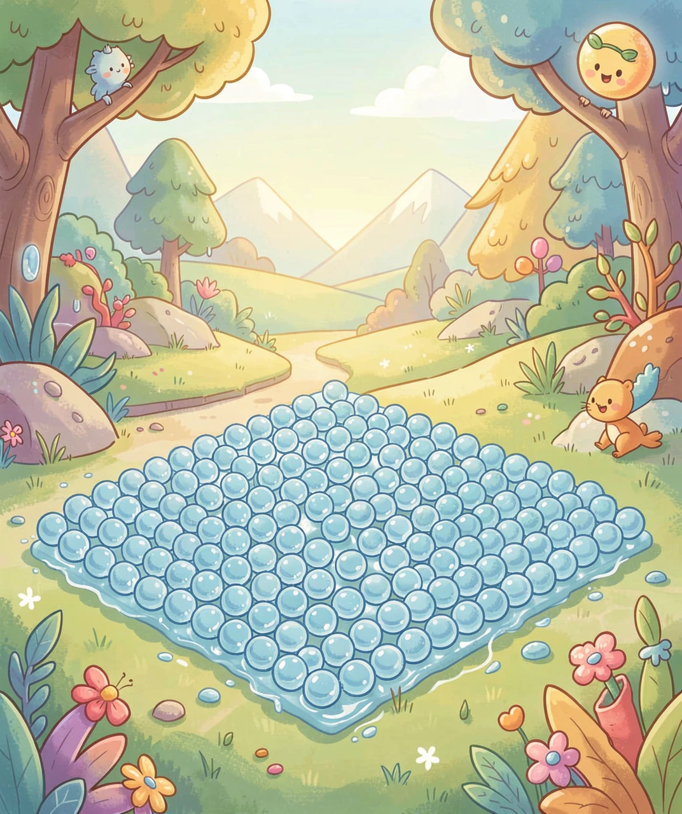
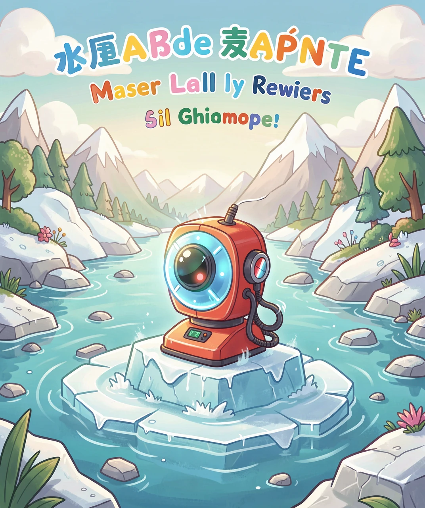
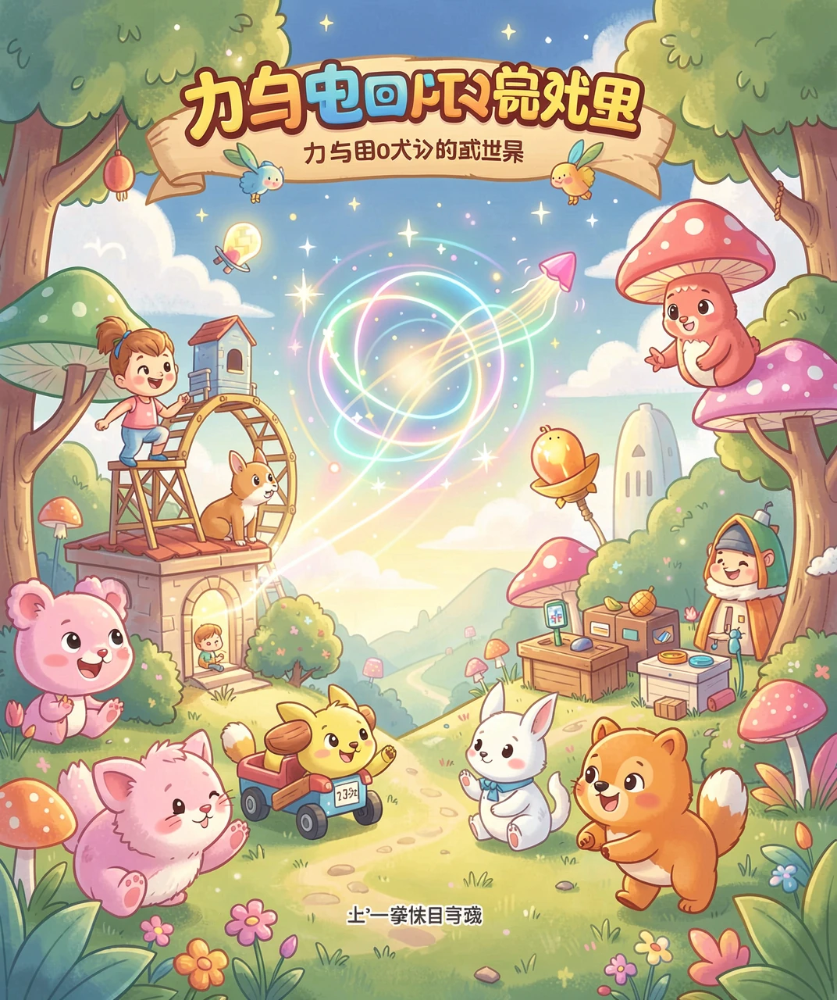

弯一弯冰块，竟然能冒出电
冰，你一定很熟悉。夏天吃冰棍、喝冰水，冬天屋檐下挂着一串串冰凌。可是你想过吗——把一块冰弯一弯，它竟然能发电！
这听起来像不像魔法？其实，这是科学家最近发现的真事。科学家发现，冰这种看起来普普通通、硬邦邦的东西，当你把它轻轻弯曲的时候，它的表面会冒出一点点电来。
当然，这个电非常非常微弱，微弱到要用特别精密的仪器才能测出来。但它却是真的存在的！这就说明，冰不只是「冷冰冰的一块」，它身体里还藏着发电的小秘密。今天，我们就来揭开这个神奇的秘密。

其实，「用力气换来电」这件事，早就不是什么新鲜事了。你见过打火机吗？就是那种「咔哒」一按就冒出火星的打火机。它里面没有电池，却能打出电火花，靠的就是「压电效应」。
打火机里藏着一块小小的压电陶瓷。你一按，它就受到挤压，被压得变了形，于是它内部就产生了电。这股电「啪」地一下放出来，就点着了火。
「压电」是挤压出电；而「挠曲电」是弯曲出电。它们是一对「亲戚」，道理很像：都是让材料变一变形，电就跟着跑出来了。只不过压电需要特定形状的晶体，而挠曲电，几乎所有的材料都有那么一点点。

那冰为什么也能发电呢？秘密藏在冰的「身体结构」里。
冰是水冻成的。在冰里，数不清的水分子手拉手，排成了一个整整齐齐的「队伍」，就像小朋友们排成的方阵。每个水分子都有正电和负电的两头，平时正负电互相抵消，安安静静的。
可是，当你把冰弯曲的时候，这个整齐的队伍就被「挤歪」了——弯过来的这一边被压紧，另一边被拉长。水分子们被挤得东倒西歪，正电和负电的排列就乱了套，不再能互相抵消。
这样一来，冰的一边就多出了正电，另一边多出了负电，电就这样「冒」出来了。所以，弯一弯冰，其实就是把冰内部的水分子「排排队」给打乱了，电就显现出来啦。

你可能会问：这点微弱到几乎看不见的电，有什么用呢？别小看它，用处可大着呢！
科学家正在想：能不能利用冰的挠曲电，做出一种特殊的传感器？比如，在寒冷的南极、北极，或者在高高的雪山上，放一块冰做的「小探子」。当冰川在缓缓移动、开裂、变形时，冰就会弯曲，冒出电来。仪器一测到这个电，就能知道冰川的动静，提前发出预警。
再比如，未来也许能用「会变形发电」的材料，给小小的设备供电。走在路上，鞋子一弯一弯就发电；衣服一动一动就发电。这样就不用老换电池啦。
虽然冰发电现在还在研究的早期，但它打开了一扇新的大门：原来，电和「变形」是好朋友，抓住这个规律，未来就有无限可能。

认识了「弯曲冰发电」，你有没有发现一个大道理？那就是——力和电，原来是可以互相转化的。
用力去压、去弯一个东西，东西变形了，就可能产生电（这叫压电、挠曲电）；反过来，给某些东西通电，它还会变形、会振动（比如手机里的振动马达、会唱歌的蜂鸣器）。
这个「力与电互相变来变去」的本领，让我们的世界变得非常方便。从打火机到手表，从传感器到未来的发电鞋，到处都有它的身影。
所以，下次你再看到一块冰，别只想着它冷冰冰的。试着想一想：这块小小的冰里，藏着多少科学的秘密呀！也许有一天，你也能发现一个别人都没发现的「神奇现象」呢。

（答案：B、A、B、B、B。你都答对了吗？）